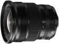
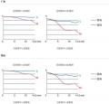
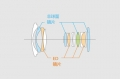
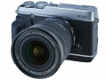

器材库 > APS画幅镜头 > XF 10-24/4 R OIS

详细规格
镜头类型
超广角变焦镜头
发布日期
2013-12-18
焦距
10mm-24mm
等效35mm画幅焦距
15mm-36mm
最大光圈
f/4.0
最小光圈
f/22
视角（对角）
110°-61.2°
镜头结构
14片/10组
非球面镜片
4片
低/超低色散镜片
3片
光圈叶片
7片
最近对焦距离
24cm
最大放大倍率
0.16
滤镜口径
72mm
防抖
是
尺寸
78x87mm
重量
410g
徽州山人2017-03-18 16:534.42 分
操作性 4.00耐用性 4.00性价比 4.00解像力 5.00色彩还原 5.00机械结构 4.50
stangetz2015-04-10 07:164.75 分
操作性 5.00耐用性 5.00性价比 5.00解像力 4.50色彩还原 4.50机械结构 4.50
drac2015-01-28 14:294.33 分
操作性 4.50耐用性 4.50性价比 4.00解像力 4.00色彩还原 4.50机械结构 4.50
清风清风2014-09-02 21:053.58 分
操作性 4.00耐用性 3.50性价比 2.50解像力 4.00色彩还原 4.00机械结构 3.50
产品图 / 样片



评测 / 相关文章
相关文章
- ［资讯］拆解富士XF10-24清理镜片灰尘 （原站已下线）
- ［资讯］看看富士用户最常用的镜头 （原站已下线）
- ［试用］富士XT1日本关西行——东瀛伽蓝枫红纪 （原站已下线）
- ［试用］带着XF10-24/4 OIS拍北欧 （存档）
- ［试用］高品质广角变焦 富士XF10-24mmF4评测 （存档）
- ［试用］富士XF 10-24mm镜头样张 （存档）
- ［资讯］富士XF 10-24/4 R OIS （存档）